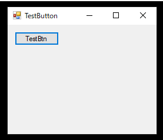

[C#] 59. ウィンドウフォーム(Window form)にコントロール(Control)を使い方法
こんにちは。明月です。
この投稿はC#のウィンドウフォーム(Window form)にコントロール(Control)を使い方法に関する説明です。
以前の投稿でWindow formを作成する方法に関して簡単に説明しました。
link - [C#] 58. ウィンドウフォーム(Window form)を作成する方法、そしてウィンドウメッセージとキュー
一般的に我々がウィンドウプログラムを作成するとよく使うクラスはたぶんコントロール(Control)オブジェクトです。
このコントロールオブジェクトは基本的に.Net frameworkから提供しています。
実はこの基本的なコントロール(Control)だけ使ってもほぼすべてのウィンドウプログラムを作成することができます。仕様により必要なコントロール(Control)を開発することができますが、私の考えで多いプロジェクトが基本的に提供するコントロールだけで十分に開発ができると思います。
まず、フォームにコントロールを追加する方法はデザイン画面でドラッグアンドドロップ(Drag and drop)を利用して追加することがあるし、Form1.Designer.csページでソースを作成して追加することができます。
様々な簡単なコントロールを追加する部分はやはりデザイン環境で作業することが便利ですが、デザインで追加すると精密な設定は大変な部分があります。
そうならForm1.Designer.csで追加する方法です。
// Designerコードはなぜかnamespaceが宣言されていません。
// よく使うライブラリのnamespaceを宣言する方が良いでしょう。
using System.Windows.Forms;
namespace WindowsFormsApp
{
// 初期に生成すると、様々なコメントなどが作成されていますが、綺麗に削除しましょう。
partial class Form1
{
// リソース管理変数(これが触ることがないので、そのままに置きましょう。)
private System.ComponentModel.IContainer components = null;
// buttonコントロールメンバー変数
private Button button = null;
// 初期化関数
private void InitializeComponent()
{
// インスタンス追加(上にusingを使っても、Visual studioから自動にnamespaceが付けますね。)
this.button = new System.Windows.Forms.Button();
// レイアウト設定
this.SuspendLayout();
//
// button
//
// ボタン位置設定(GDI座標系、ウィンドウの上右が0,0だ、一つピクセルたびに一ずつ移動)
this.button.Location = new System.Drawing.Point(12, 12);
// コントロール名設定
this.button.Name = "TestBtn";
// ボタンのテキスト設定
this.button.Text = "TestBtn";
// コントロールサイズ設定
this.button.Size = new System.Drawing.Size(75, 23);
// TabIndex設定
this.button.TabIndex = 0;
//
// Form1
//
this.AutoScaleDimensions = new System.Drawing.SizeF(6F, 13F);
this.AutoScaleMode = System.Windows.Forms.AutoScaleMode.Font;
// フォームサイズ設定
this.ClientSize = new System.Drawing.Size(253, 186);
// フォームにコントロール追加
this.Controls.Add(this.button);
// フォーム名
this.Name = "Form1";
// フォームの上のテキスト
this.Text = "TestButton";
// フォームレイアウト設定
this.ResumeLayout(false);
}
// 初期にはこの関数がクラスの上に作成していますが、そのように重要な関数ではないのでソースに下に移動
protected override void Dispose(bool disposing)
{
// プログラムが閉じる時、作動するリソース解除
if (disposing && (components != null))
{
components.Dispose();
}
base.Dispose(disposing);
}
}
}
私がWindowフォームでコントロールを作成する方法はいったんDesignerソース画面で使うコントールメンバー変数とインスタンス生成、そしてName設定(これが一番重要)、Text設定、そしてControls.Addを通ってWindowフォームにコントロール設定を追加します。次はまた、デザイン`モード画面に戻ってコントロールをウィンドウフォームに合わせて配置、サイズ設定をします。
そしてまた、ソースに戻って精密な設定をします。

なぜ、このように複雑に作るかなと思いますが、率直にVisual Studioに提供するデザインモードはすごく便利です。でも、自動設定が多すぎるので気づかなくソースが作成されてしまうことも多いです。
例えば、Name項目です。このName項目はWindow Formで別に要らないとみえますが、実は識別ですごく重要な部分です。
我々がメンバー変数を宣言してメンバー変数で直接にコントールインスタンスを取得すれば問題がなさそうですが、それがFormのクラス内だけですね。他のコントールではどうでしょう?Formのインスタンスを渡しでメンバー変数をすべてプロパティ化して取得しない以上どのコントロールがどのコントロールかわ分かりません。
これに関してが投稿の下で詳細に説明します。
なので、デザインモード그で作成することも重要ですが、Form.Designer.csソースファイルにもしっかり作成されているか、任意の変数名ではなく、少し区別しやすい変数名で作成されているか程を確認するためにもソースでも作成する方が良いでしょう。
ここまでFormからControlを追加することを説明しました。
それならこのControlに関して詳細に説明します。
Windowで提供するすべてのコントールはControlクラスを継承しています。まるでクラスがObjectクラスを継承したこととみたいです。
ButtonだけみてもButtonBaseを継承してButtonBaseはControlを継承しました。
つまり、我々がこのControlを継承したらコントールを作ることができるという意味ですね。
そうするとクラスを追加してコントロールを作りましょう。
using System;
using System.Windows.Forms;
namespace WindowsFormsApp
{
// TestControl生成
class TestControl : Control
{
// プロパティの再定義
public override string Text
{
// 取得は可能ですが、
get => base.Text;
// 設定はできない。
set { }
}
// コンストラクタ
public TestControl()
{
// 初期Text設定
base.Text = "Hello World";
// 初期サイズ設定
base.Size = new Size(100, 22);
}
// 描画イベント
protected override void OnPaint(PaintEventArgs e)
{
base.OnPaint(e);
// フォーム取得
var form = FindForm();
// Textを描画
e.Graphics.DrawString(base.Text, form.Font, Brushes.Red, new PointF(0, 0));
}
}
}
実はOnPaintに関して説明するためにはGDIに関して知るべきですが、GDIは別の投稿で詳細に説明してここには簡単に上みたいに作成しましょう。
TestControlはインスタンス外部で設定することができません。設定すると思っても何も処理が行わないでしょう。そうするとTextを何処で設定するかというとコンストラクタがHello worldで設定しました。
そしてまた、Visual studioのデザインモードの画面に行きましょう。
そうするとToolboxにTestControlが追加されたことを確認できます。(もしなければF5を押下してデバックすしたら見えします。)
そうならまた、Buttonみたいにドラッグアンドドロップ(Drag and drop)でコントロールを追加しましょう。そしてForm.Designer.csにも変数名とNameなどを設定しましょう。
using System.Windows.Forms;
namespace WindowsFormsApp
{
partial class Form1
{
/// リソース管理変数(これが触ることがないので、そのままに置きましょう。)
private System.ComponentModel.IContainer components = null;
// buttonコントロールメンバー変数
private Button button = null;
// 新しく生成したコントロールメンバー変数
private TestControl testCtl = null;
// 初期化関数
private void InitializeComponent()
{
// インスタンス生成
this.button = new System.Windows.Forms.Button();
this.testCtl = new WindowsFormsApp.TestControl();
// レイアウト設定
this.SuspendLayout();
//
// button
//
// ボタン位置設定(GDI座標系、ウィンドウの上右が0,0だ、一つピクセルたびに一ずつ移動)
this.button.Location = new System.Drawing.Point(27, 40);
// コントロール名設定
this.button.Name = "TestBtn";
// ボタンのテキスト設定
this.button.Size = new System.Drawing.Size(75, 23);
// TabIndex設定
this.button.TabIndex = 0;
// コントロールに使うText名設定
this.button.Text = "TestBtn";
//
// testCtl
//
// 位置設定
this.testCtl.Location = new System.Drawing.Point(27, 12);
// コントロール名設定
this.testCtl.Name = "testCtl";
// サイズ設定
this.testCtl.Size = new System.Drawing.Size(100, 22);
// TabIndex設定
this.testCtl.TabIndex = 1;
// Text設定(意味がなし)
this.testCtl.Text = "Hello World";
//
// Form1
//
this.AutoScaleDimensions = new System.Drawing.SizeF(6F, 13F);
this.AutoScaleMode = System.Windows.Forms.AutoScaleMode.Font;
// サイズ設定
this.ClientSize = new System.Drawing.Size(253, 186);
// コントロール追加
this.Controls.Add(this.button);
this.Controls.Add(this.testCtl);
// フォーム名設定
this.Name = "Form1";
// フォームの上のテキスト
this.Text = "TestButton";
// フォームレイアウト設定
this.ResumeLayout(false);
}
// 초기에는 이게 클래스의 위쪽에 작성되어 있는데, 그렇게 중요한 함수가 아니기 때문에 아래쪽으로 옮깁니다.
protected override void Dispose(bool disposing)
{
// 프로그램이 닫힐 때, 작동되는 리소스 해제.
if (disposing && (components != null))
{
components.Dispose();
}
base.Dispose(disposing);
}
}
}
上みたいに設定して実行すればウィンドウフォームからラベルみたいにコントールが追加されたことを確認できます。
これから私が作成したコントールでbuttonのイベント受け取りましょう。
buttonイベントでクリックするとテキスト内容がHello worldからClick!に変更する内容です。
using System;
using System.Drawing;
using System.Linq;
using System.Windows.Forms;
namespace WindowsFormsApp
{
// TestControl生成
class TestControl : Control
{
// プロパティの再定義
public override string Text
{
// 取得は可能ですが、
get => base.Text;
// 設定はできない。
set { }
}
// コンストラクタ
public TestControl()
{
// 初期Text設定
base.Text = "Hello World";
// 初期サイズ設定
base.Size = new Size(100, 22);
}
// コンストラクタに実装内容を作成するとFormにコントールが追加される前なので初期設定以外にはOnCreateControlイベントに作成しましょう。
protected override void OnCreateControl()
{
base.OnCreateControl();
// フォーム取得
var form = FindForm();
// フォームからTestBtnの名を持っているボタンを取得する。
var button = (from Control c in form.Controls where c is Button && "TestBtn".Equals(c.Name) select c).FirstOrDefault();
// nullではなければ
if (button != null)
{
// イベント追加
button.Click += Button_Click;
}
}
// ボタンクリックイベント
private void Button_Click(object sender, EventArgs e)
{
// テキストを更新
base.Text = "Click!";
// OnPaint呼び出す。
Invalidate();
}
// 描画
protected override void OnPaint(PaintEventArgs e)
{
base.OnPaint(e);
// フォーム取得
var form = FindForm();
// Textを描画
e.Graphics.DrawString(base.Text, form.Font, Brushes.Red, new PointF(0, 0));
}
}
}
実行してボタンをクリックするとTestControlのTextがHello worldからClick!に更新されたことを確認できます。
上のソースをみればControlからFormのインスタンスを取得する関数はFindForm()です。もちろん、コンストラクタでコントロールを生成する時、Formのインスタンスをパラメータに渡すことも可能ですが、Window formを作成する時にソースコード規約を守らないとVisual studioのデザインモードがエラーが発生する可能性があります。
それで一般的にControlではFormのインスタンスをFindForm()関数を利用して取得します。そうするとFormのインスタンスからボタンインスタンスをどのように探すか?
そうです。上で設定したControlのNameで探します。もちろん、ボタンのインスタンスをプロパティでpublicを設定すればNameで探す必要がありませんが、実際にウィンドウプログラムを開発するとすごく多いコントロールを使うことになります。
そうならすべてのコントールをプロパティに設定するとソースがかなり汚くなりますね。また、FindFormで取得するタイプはFormクラスタイプです。そうならForm1で強制キャストして型変更もやるべきですね。
上の例ではDialog型の一つのフォーム(SMI:Single Document Interface)ですが、MDI(Multiple Document Interface)型ならFormもコントロールほと使うでしょう。
マルチForm環境でTestControlを使うと思えば、強制キャストするとエラーが発生する可能性が高いです。
なので、コントールでフォームインスタンスを取得する方法はFindForm()関数ろ利用して、コントロールを探す方法はNameを利用して探す方法が安全です。
なのでコントロールでNameを設定するのは識別ために重要な作業になります。
ここまでC#のウィンドウフォーム(Window form)にコントロール(Control)を使い方法に関する説明でした。
ご不明なところや間違いところがあればコメントしてください。
- [C#] 59. ウィンドウフォーム(Window form)にコントロール(Control)を使い方法2021/10/29 19:45:43
- [C#] 58. ウィンドウフォーム(Window form)を作成する方法、そしてウィンドウメッセージとキュー2021/10/27 20:35:44
- [C#] 57. コーティング規約2021/10/21 18:57:02
- [C#] 56. 値の初期化及び基本データ値(default)を設定する方法、そして原始データのnull処理、?と??の使い方2021/10/21 18:54:41
- [C#] 55.namespaceとusing、そしてpartialの使い方2021/10/21 18:51:39
- [C#] 54. Reflection機能を使い方 - Attribute2021/10/20 19:29:31
- [C#] 53. Reflection機能を使い方 - Propertyとevent2021/10/19 21:02:58
- [C#] 52. Reflection機能を使い方 - Variable2021/10/15 19:27:37
- [Design pattern] 2-6. プロキシパターン(Proxy pattern)2021/11/01 19:42:44
- [Design pattern] 2-5. フライウェイトパターン(Flyweight pattern)2021/10/29 19:48:27
- [C#] 59. ウィンドウフォーム(Window form)にコントロール(Control)を使い方法2021/10/29 19:45:43
- [Design pattern] 2-4. デコレーターパターン(Decorator pattern)2021/10/28 20:11:13
- [C#] 58. ウィンドウフォーム(Window form)を作成する方法、そしてウィンドウメッセージとキュー2021/10/27 20:35:44
- [Design pattern] 2-3. ブリッジパターン(Bridge pattern)2021/10/27 20:32:21
- [Design pattern] 2-2. コンポジットパターン(Composite pattern)2021/10/27 20:30:54
- [Design pattern] 2-1. アダプターパターン(Adapter pattern)2021/10/26 19:12:40
- [Project design] プログラム最終テスト - ST(System test(Standard, Scenario))2021/10/26 19:10:07
- [Project design] プログラム結合テスト - IT(Integration test)2021/10/25 20:12:17
- [Python] Seleniumライブラリを使う方法(自動ウェブテスト、ウェブスクレイピング)2021/10/25 19:29:00
- [Design pattern] 1-5. プロトタイプパターン(Prototype pattern)2021/10/22 19:35:45
- [Project design] プログラム検証とテスト - Unitテスト2021/10/22 19:34:09
- [C#] 57. コーティング規約2021/10/21 18:57:02
- [C#] 56. 値の初期化及び基本データ値(default)を設定する方法、そして原始データのnull処理、?と??の使い方2021/10/21 18:54:41